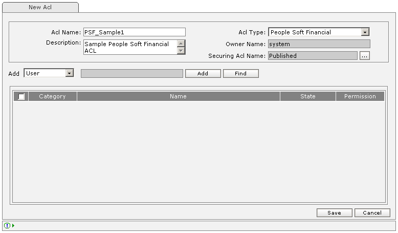

| How To Create an ACL? |
|
 |
Create New ACL |
| Name | Min Length | Max Length | Description | Comment |
|---|---|---|---|---|
| ACL Name | 5 | 20 | Enter unique ACL Name. | Required |
| Description | Enter ACL description. | Optional | ||
| Acl Type | - | - | Select the type of ACL to create.
|
Required (by default "Non Adapter ACL is selected otherwise") |
| Owner Name | 5 | 20 | Enter Owner Name who is owning this ACL. | Required |
| Securing ACL Name | ACL name which will secure this ACL.
|
Required | ||
| Add | Select option User/Group to be added as Access Control Entry. | Required | ||
| 'Add' button | To make the Access Control entry:
|
|||
| 'Find' button | To display User/Group list:
|
|||
| 'Save' button | Press 'Save' to save the newly created Acl, the ACL will be saved and ACL list will appear with the message in the status Bar as "ACL 'SteffiaACL' successfully saved." | |||
| 'Cancel' button | Press 'Cancel' to abort new ACL creation. |